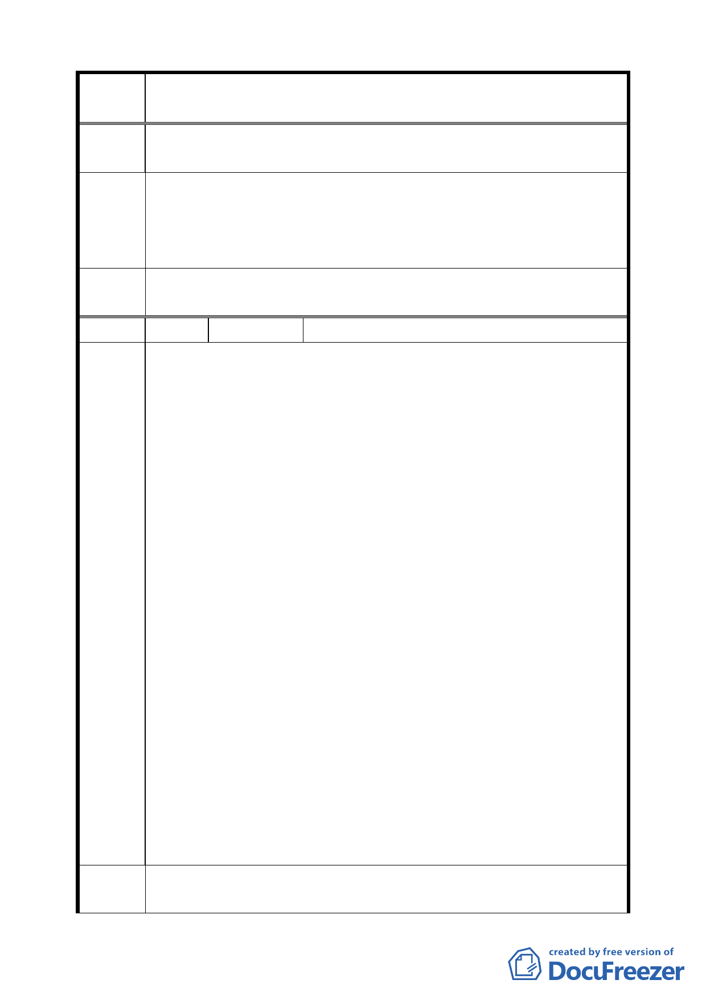

變更臺北市信義區信義段三小段五三之三四地號人行步道用地為
案 名 道路用地計畫案
之建築物設置地下停車場之需求，而將此行人徒步區改成道路用
地，市府考慮上的不周延實不應由市民買單。
建議維持五米的行人徒步區
建 議 辦 另松勇路五十三巷以北，於信義路五段九十一巷與松勇路間南北
法 向通行之行人徒步區，建議調整為道路使用；鄰近土地如須開闢
建築請自行退縮，連結南北向道路（即人行步道）供建地通行。
委員會
決議
同編號 1。
編號
7 陳情人
胡毓成、莊博雄、余正祥、陳威成、陳順
1.本案於兩次協調會後，立即整合多數地主共同意見，包括地號
43、43-1、43-2（胡姓、劉姓、安廷建設公司）、43-3（寧波同
鄉會）、43-5（莊姓）、47-2（陳姓、游姓）等各家族意見，透過
問卷一致表達反對所有替代方案及贊成原方案道路規劃（單向暢
通）之立場，並收集贊成原方案道路規劃之問卷調查表共 37 張，
（經詢都發局回收問卷總計共 46 份，其中勾選原方案有 37 份，
勾選替代方案僅 4 份，另 4 份提出替代方案 5，未勾選者 1 份）。
經歸納反對及贊成之理由詳陳如附件。
2.據悉都發局於 94/10 補陳貴委員會本案最新之「建議方案」，擬
排入 94/12 審議。經相關地主們關切瞭解後，認為該「建議方案」
陳 情 理 內容明顯背離問卷調查大多數地主之意見，嚴重影響地主權益及
由 公眾利益，略陳如下：
（1）基地北邊人行步道改成 5M 車道後，擬變更西端設置車阻，
若依此變更後車道出口朝東，所有車輛進入市區必需向東繞
道行駛，造成拐彎抹角及雙向會車困難等諸多不便，勢必引
起民怨。若將原方案規劃之通暢道路，變更成死巷設計，無
故阻斷道路流暢，造成突兀景觀，與週邊環境極不協調，嚴
重影響地主權益及整體公眾利益。
（2）道路南側住宅區退縮 1.5M 人行步道，並未提供專案退縮補
償－「建議方案」僅提供五年時程獎勵 3%，地主普遍認為
不足，與第一次協調會中，各方熱烈反映應提供合理專案容
積補償的共識不符。
建 議 辦 1.針對都發局所提最新建議方案，經多數地主共同商討後，認為相
法 關權益受損，決推派代表列席參加貴委員會審查會議，聆聽本案
8